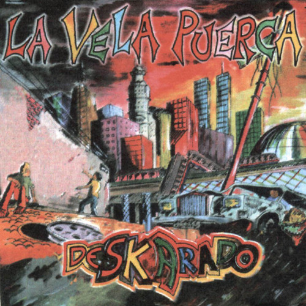
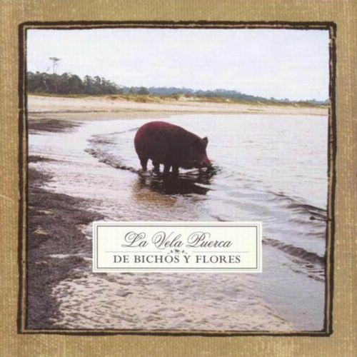

Discos y canciones
Deskarado

- Alta Magia
- El bandido salto de mata
- Común cangrejo
- Madre resistencia
- Pedro
- Paren hoy
- Vuelan Palos
- Mi semilla
- A su bola
- Gente
- De tal palo, tal astilla
- El gavilán
- Las polillas
De bichos y flores

- Por la ciudad
- Por dentro
- El viejo
- El huracan
- Contradecir
- El profeta
- Potosi
- Mañana
- El ojo moro
- José sabia
- Rebuscado
- Burbujas
- De no olvidar
A contraluz
- Llenos de magia
- Sin palabras
- Dice
- De atar
- Va a escampar
- Escobas
- Clarobscuro
- Zafar
- Caldo precoz
- Haciensose pasar por luz
- En el limbo
- Un frasco
- Doble filo
- A lo verde
Piel y Hueso
- Sobre la sien
- Y asi vivir
- La teoría
- Tentación
- Sigo creyendo
- Cada palabra
- Se le va
- El borde
- No se sabe porqué
- Polidoro
- Todo el karma
- Se despierta
- Sé a donde quiere ir
- Solo un paredón
- El buitre
- Hoy
- Tres minutos
- Requiem por vos